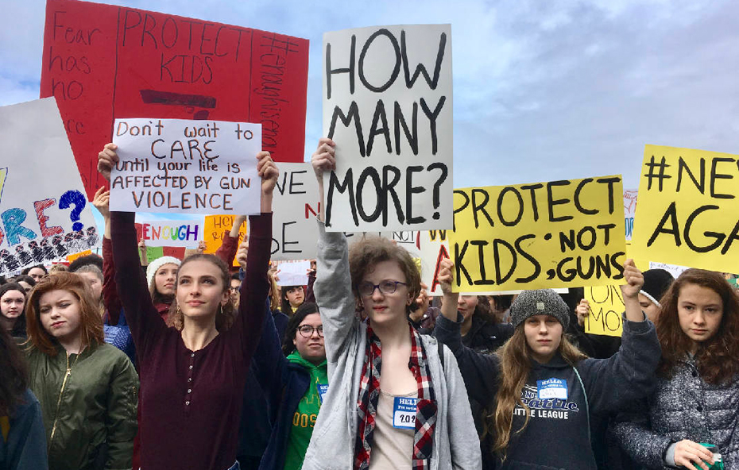

We care about everyone's safety
Actions we can take

SUMMARY OF RECOMMENDATIONS
- Sensible gun laws: Reduce easy access to dangerous weapons.
- Establish a culture of gun safety.
- Reduce firearm access to youth and individuals who are at risk of harming themselves or others.
- Hold the gun industry accountable and ensure there is adequate oversight over the marketing and sales of guns and ammunition.
- Engage responsible gun dealers and owners in solutions.
- Insist on mandatory training and licensing for owners.
- Require safe and secure gun storage.
- Public health solutions: Recognize gun violence as a critical and preventable public health problem.
- Comprehensive solutions: Support community planning and implementation of comprehensive community safety plans that include prevention and intervention.
- Trauma, connection, and services: Expand access to high quality, culturally competent, coordinated, social, emotional, and mental health supports and address the impact of trauma.
cited from Prevention Institude.
 Stop
Stop